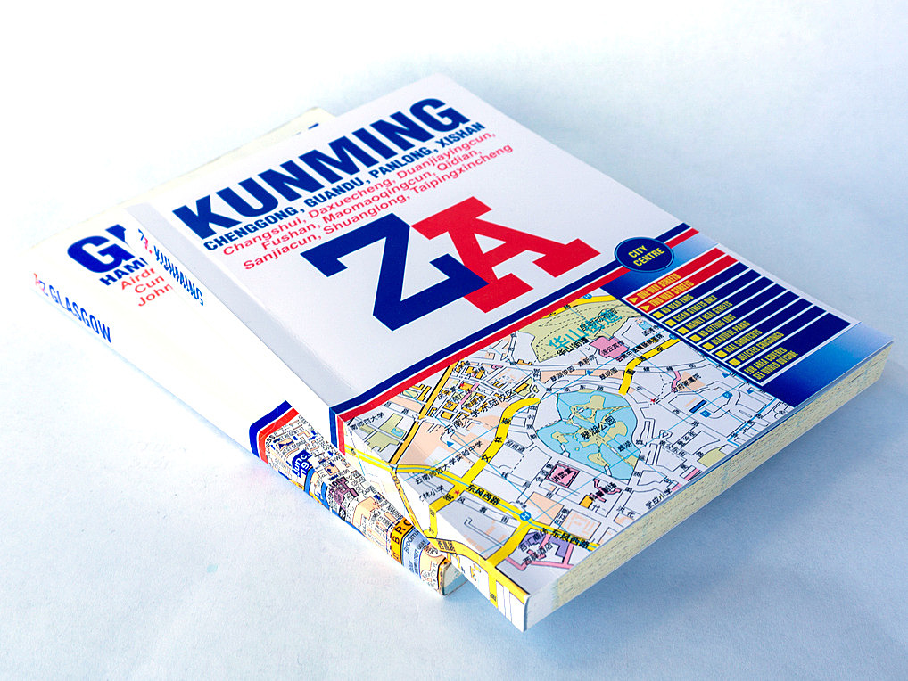

k
I like it when things are broken, or used in ways other than intended.
I used to walk with the Sunday Adventure Club. I've also exhibited some experimental maps with The Residents Association.


I like it when things are broken, or used in ways other than intended.
I used to walk with the Sunday Adventure Club. I've also exhibited some experimental maps with The Residents Association.
July 2021
Z to A is an ongoing series of street atlas publications for places that the A to Z never dared to go.
on May 19th I saved an injured bird, unable to escape from the balcony it was trapped in, from certain death by dehydration.

an accurate map of the world's borders and the shrubs on either side. /borderlands

online tool for converting to/from Florence Universal Hexadecimal Mean Time
TCS34725AutoGain Arduino library
Processing Sound library 2.0
processing-sound Java library.thiswasyouridea.com
cultevo R package
the cultevo R package provides measures and statistical tests for the study of cultural evolution.
{kind=link}